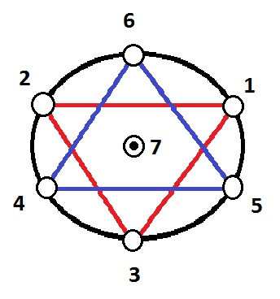

А смысл в чем? Ева, это Дар Орла Адаму. Подарок. Подарок нужно заслужить. То есть захотеть и добиться своими силами. Механизм очень прост. Пока подарок дарен кому-то без его собственного включения своего смысла цели и намерения в действие его дарения самому себе со стороны Высшего, этот "подарок" подобен дарам Золотой Рыбки у Пушкина. То есть, "старик" раз за разом оказывается у разбитого корыта, поскольку смысл этой истории в скрытом хитколелуте*См. также: Хозяин и гость, Зеир Арихович Анпин, имеющимся между его "старухой" и золотой рыбкой, посредством "желания получать", то есть Змея, который в нем скрыто действует, ведя "старика", от "старухи" до "золотой рыбки" и обратно через "разбитое корыто". Называемом "Змей" (Выползающий из "яблока Древа познания...", осуществляющий свое грязное, но нужное, дело, и заползающий обратно, чтобы повторять то же самое снова и снова).
Адам должен научиться (Питону, хахаха). Быть Змеем самому. Заменить своим намерением Намерение "эманаций Орла". И тогда он сможет достичь своей цели. Своими средствами. То есть, "получить", таки, "Дар Орла". И Еву в придачу :)
Как это делается? Очень просто. Нет действующего без Цели. Ступень Жизни в Дар, это ступень действия, которое делает действующий, имеющий вполне четкую определенную Цель. Которую будет достигать (в нашем случае, не достигать, оставаясь раз за разом у "разбитого корыта") раз за разом "получатель" Жизни, то есть "подарка", в котором скрыта ступень намерения и цели, достигаемая и раскрываемая посредством действия тем, кто этот подарок получает, получая в подарок и проживая определенный объем "Жизни этого мира". Реальный подарок, это не этот объем Жизни и не та жизнь, которую он проживает, а тот Путь, который ведет к его получению. Реальный подарок раскрывается в конце пройденного этапа жизненного Пути, как Кли, выстроенное посредством его прохождения "получающим" Дар. Сделаем и услышим!
Кли - это инструмент, навык, способность, личная Сила, выраженная в умении делать действие, посредством которого это Кли было изначально сформировано. То есть становиться "подобным по свойствам" Тому, Кто это действие изначально совершает, делая подарок, "давая в Дар" Жизнь и чувственное восприятие. Но тот, кто получает этот дар, вырабатывает в себе ответ на вопрос "нафига", для того, чтобы самому совершать это действие осознанно. Находясь "в сотрудничестве" с Тем, Кто этот Дар реально "дарует" чувствующим существам (т.е. ему самому), создавая Еву и Змея, как одно неразрывное целое, паним и ахораим, Мужчиной и Женщиной Он создал Их. И Сам Себя спрятал между ними :)
П.С.